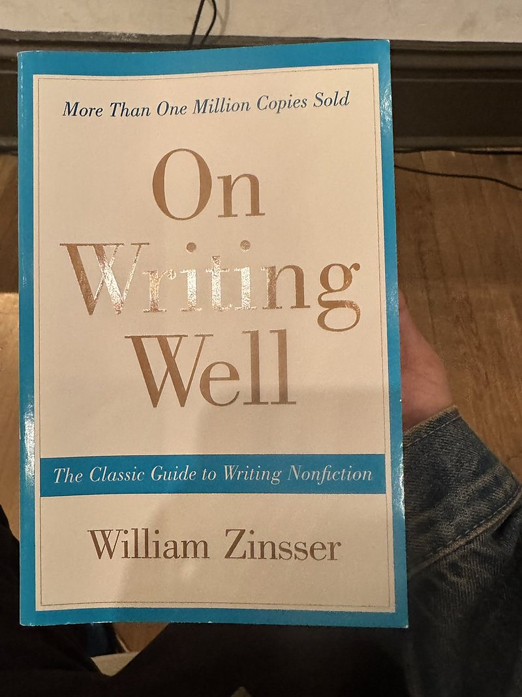
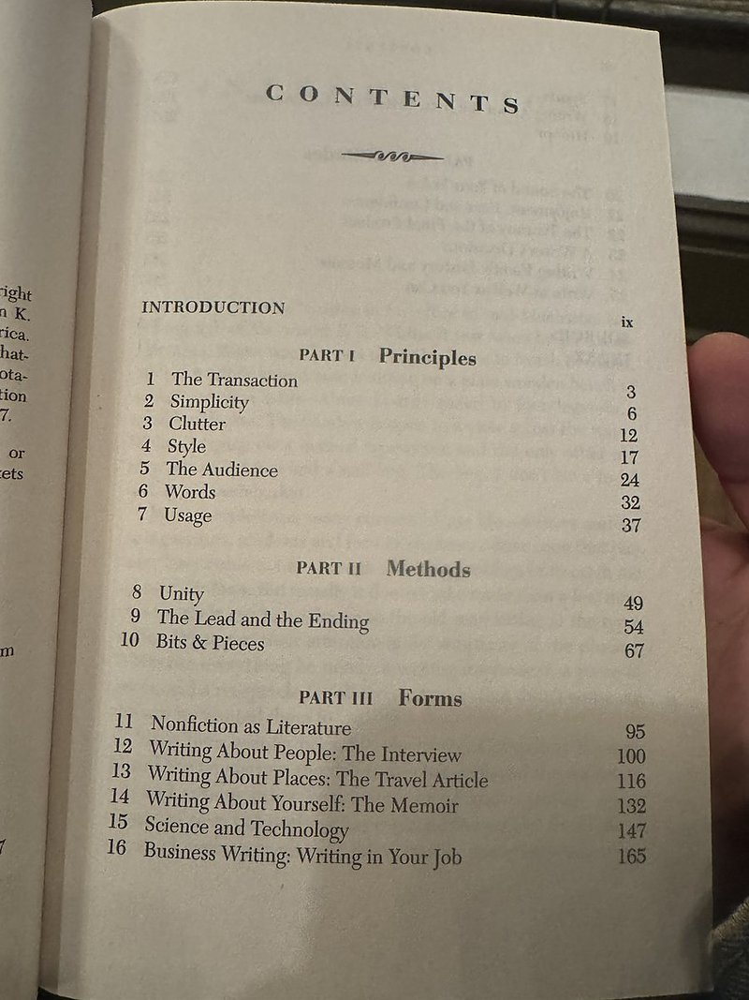

AI 日报 · 10月26日
AI 系统长大之后，接口与判断都要重新设计
OpenAI 详述海量存储的多租户隔离与缓存，Cloudflare 展示商店如何向 Agent 暴露结构化工具，Modal 访谈讨论弹性算力。Builder 则把注意力放在工程判断、学习过程与内容质量。
基础设施
结构化接口
弹性算力
人的判断
4
Builder 动态
3
今日上榜项目
3
精选原文
1
公开视频
今日要点
统一入口还要控制热键和后台流量
OpenAI 10 月 23 日回顾 Habitat 的扩容：独立容器缓解了相互干扰，却把容量规划推给各产品团队；随后转回共享容器，结合热键限流、请求优先级和按用量扩展。文中的读请求中位延迟由约 120 毫秒降到约 10 毫秒，是其自身系统改造结果。
Agent 调工具，比猜页面按钮更可控
Cloudflare 10 月 21 日介绍与 Commerce.com 的 WebMCP 试用：桥接层把站点 MCP 服务的工具暴露给浏览器中的 Agent，并支持自定义 MCP 路径；服务或浏览器不支持时，页面回退到常规浏览体验。这是合作方描述的预览实践，尚需在更多站点验证。
深度对话
Modal 创始人谈 GPU 租约与突发负载
Latent Space 10 月 22 日发布对 Modal CEO Erik Bernhardsson 的访谈。以下是受访者对算力供需和产品策略的判断；频道逐字稿标明自动转录，数字与未来预测应按原视频语境理解。
固定租约与波动需求错位
Bernhardsson 指出，市场常按多年固定区块出售 GPU 容量，但推理负载会随时间起伏；Modal 通过汇聚客户需求提供弹性容量。这是其商业模式的解释。
持有硬件也承担价格风险
他认为长期锁定容量需要权衡未来硬件价格下跌风险，同时承认近期容量仍紧张；这不是对价格走势的确定预测。
沙箱趋向更短、更易并行
节目谈到 Agent 沙箱从长期开发环境向短任务执行扩展，以及启动、暂停和克隆环境的需求。
资讯精选
从后端容量到客户端入口
检查 feeds.json 中四条 RSS；本栏选用能核对原文的近期更新。发布日期按来源标注，非全部发生于今日。
Builder 动态
工程词汇之外，仍需要人的判断
Guillermo Rauch｜模型偏爱工程取证词汇
Vercel 的 Guillermo Rauch 观察，模型常使用 gate、evidence、provenance、contract 等词；他将其与工程中大量调试、追责和理解既有系统的工作联系起来，并提出能否用更少的技术英语完成协作。这是个人观察。
Nikunj Kothari｜从上下文走到判断
Nikunj Kothari 转引一段讨论，称自己所说的 Agent 产品演进可概括为“上下文 → harness → 判断”，并邀请相关产品建设者交流。原帖没有给出可验证的成熟度模型。
Ryo Lu｜别让即时答案替代共同学习
Ryo Lu 在长文中反思，AI 工具让成果更容易出现，却可能让人跳过犯错、理解和与他人磨合的过程；他希望工具帮助人们更愿意走向现实协作。这是设计者的个人思考。
Swyx｜为技术内容组建编辑团队
Swyx 表示 Latent Space 正在招聘作者、审稿人与记者，并欢迎兼职及单篇投稿。原帖展示了他准备放进新人欢迎材料的写作书籍；这是一则团队建设动态。


GitHub Trending
今天上榜的设计与部署工具


按 10 月 26 日 GitHub Trending 实时榜单筛选，避开近期日报重复介绍的项目；星标、分叉和语言取自本次 GitHub API 快照，会随时变化。用途依据仓库自述。
今日思考
Habitat 把分片、缓存与限流藏在窄接口之后；WebMCP 把可执行动作显式交给 Agent；Modal 试图把不规则算力需求汇聚起来。三者都在替应用开发者吸收底层复杂度。与此同时，Builder 的讨论提醒：抽象越顺手，越需要让人知道何时该追问、实测和协作。今日一问：你的系统里，哪个“自动完成”的步骤最需要一个可读的证据或人工复核点？
参考来源